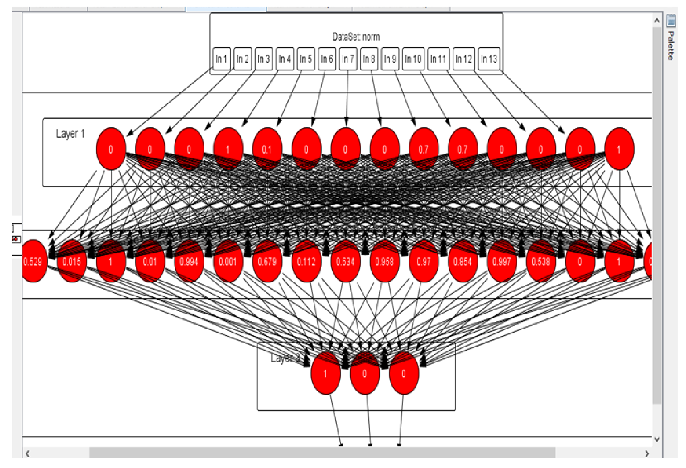

Quality of code is not given too much significance as long as it gives the right output. However, the quality of code can have a major influence on the performance of systems especially when the system is large scale. At such scales evaluating the quality of code dynamically or by running the code and measuring the performance is time consuming and consumes plenty of resources. Therefore we decided to study static code evaluation metrics to see if there was a direct corelation to the quality of code and if so how we could use these metrics to train programmars to write better quality code.
Read the complete article.
Our first step was to find existing literature pertaining to static code evaluation. We identified that large scale software systems worked with object oriented programming languages. Therefore we began to research OOP metrics and their relation with code quality. We found various metric sets such as the MOOD metrics that had a direct corelation with code quality and even had measures to differentiate between good and bad code quality. We were able to normalise the various sets to give us outputs ranging from 0 to 1 therefore giving us a uniform set of metrics to work with. We found a large number of data sets consisting of open source Java Projects that had been evaluated based on its quality. This evaluation was done dynamically based on performance metrics such as Run Time. Therefore we would be able to use this as training data.
Once we figured out the metrics we would need to evaluate code, the next step was to find a way to calculate these metrics programmatically. Some static metrics such as Lines of Code are easier to calculate as compared to metrics such as Coupling Between Objects. However, we found that the best way to automate the process was to parse the code and build an Abstract Syntax Tree. This tree structure can then be traversed easily to calculate the metrics. Since most of our training data was Java Code we decided to use a Java Parser and run methods to calculate each of the static metrics.
We used Neuroph Studio, a Java framework for Neural Networks and common learning architectures. We experimented with various architectures of networks giving them small amounts of data and measuring its learning rate and accuracy. This led us to an optimized 3 layer neural network with 13 inputs for each of the static metrics and 3 outputs indicating "Good Code", "Moderate quality code" and "Bad Code". The neural network was then trained using the calculated and normalized metric values as well as the output values provided in the training data set. The next step was to test the neural network to check its accuracy. We randomized a combination of data from the training data set as well as new Java code and fed it into the system to see if was able to accurately classify the code. We conducted several rounds of training and testing to give highly accurate results.
We created a Java swing application to display the results and make the system easier to use.